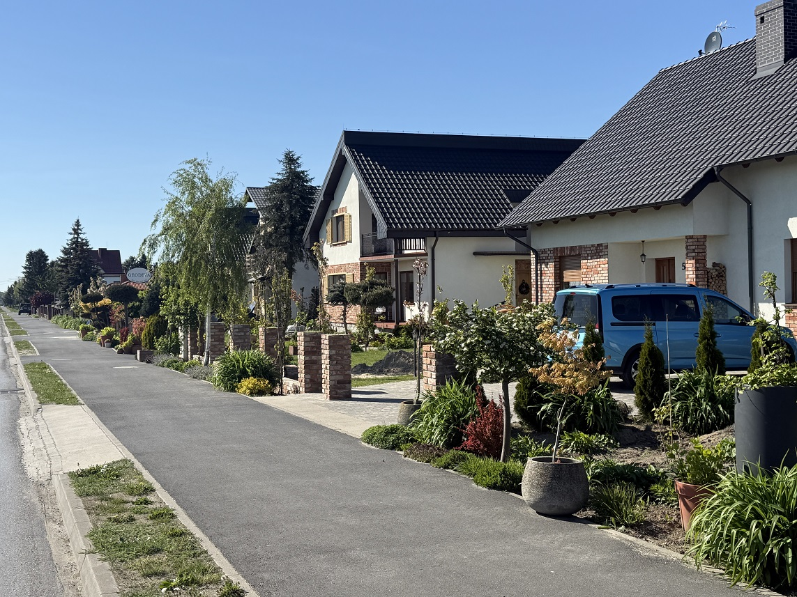
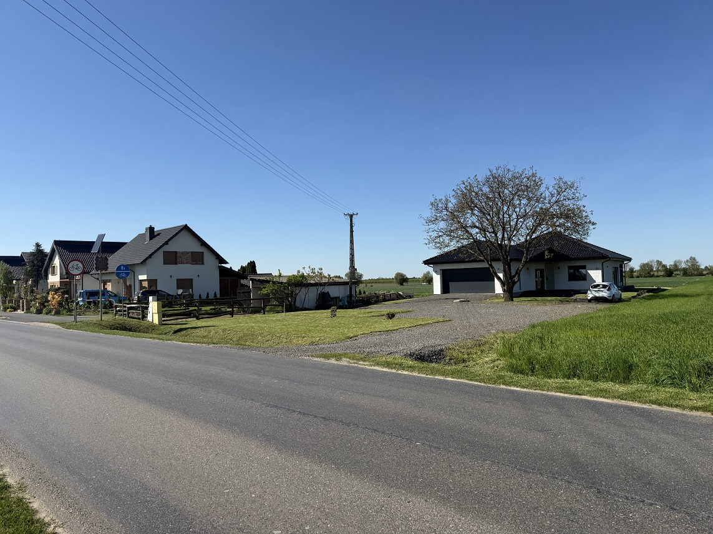
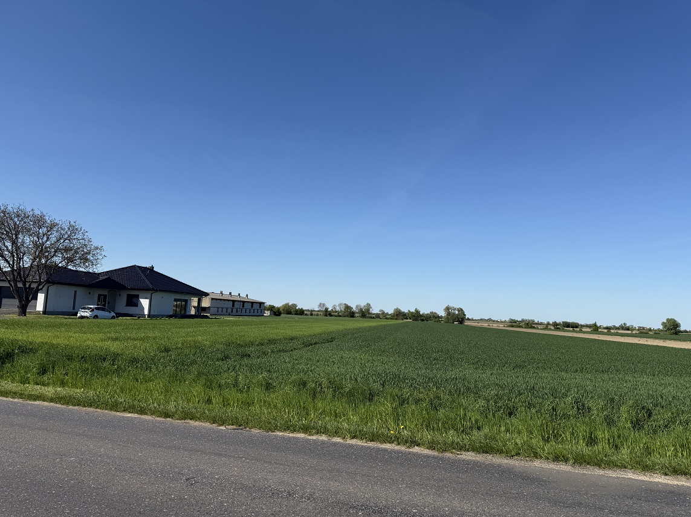
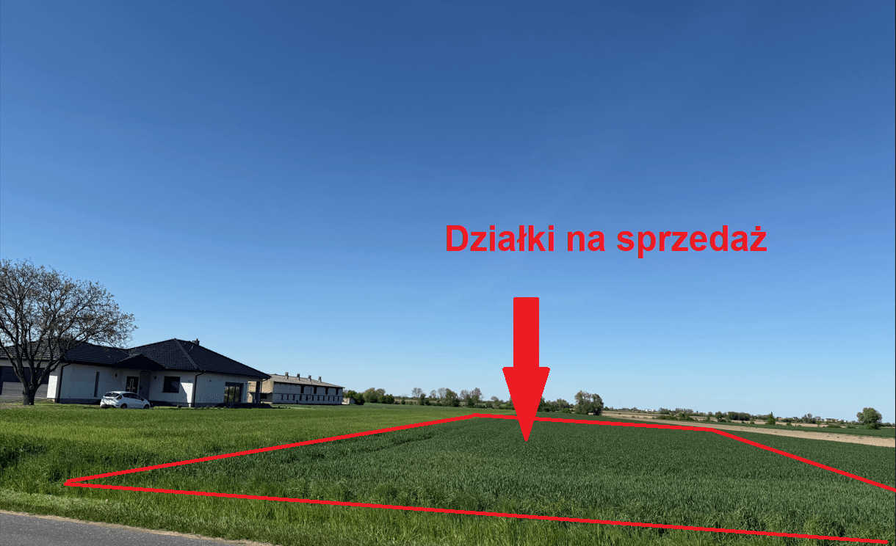
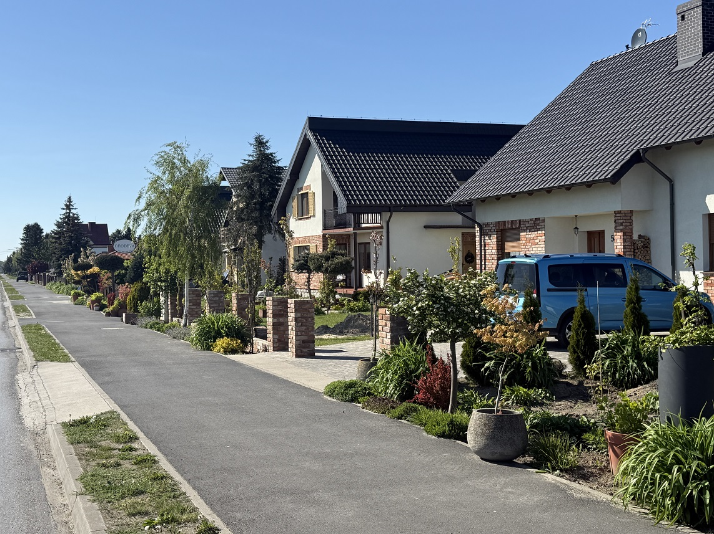
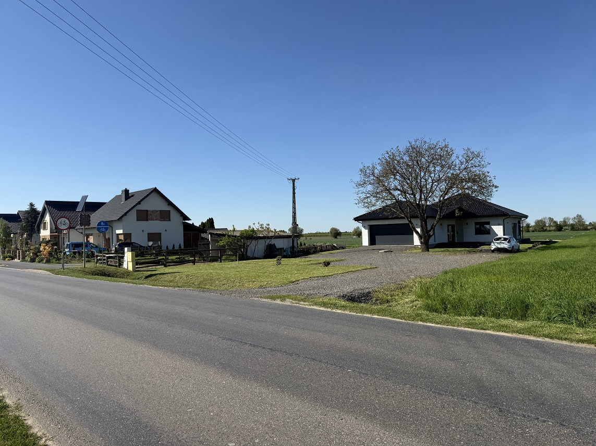
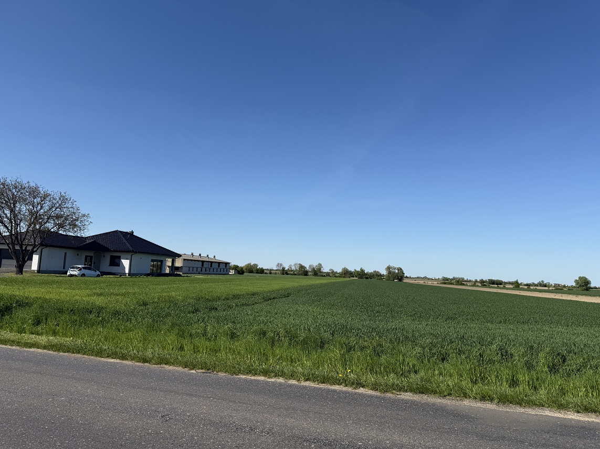
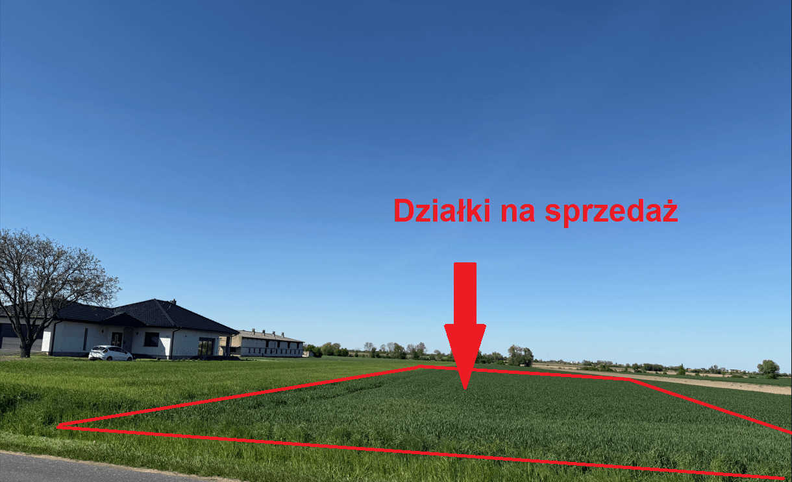

Podstawowe informacje
- Typ oferty:
- na sprzedaż
- Powierzchnia:
- 858 m²
- Typ działki:
- budowlana
- Położenie:
- Krobia, ul. Kobylińska
Wyjątkowe działki budowlane w malowniczej Krobii.
 







ul. Kobylińska, Krobia, gostyński, wielkopolskie
Piekna działka budowlana w spokojnej i malowniczej okolicy, bezpośrednio przy asfaltowej drodze. Wszystkie media w drodze. Dla terenu obowiązuje Miejscowy Plan Zagospodarowania Przestrzennego MPZP 013, tereny 1MN.
Działka posiada dokumentację pozwalającą na szybkie rozpoczęcie budowy m.in. warunki przyłączenia z Enea, uzgodnienia zjazdów, uzgodnienia warunków przyłączenia do sieci wodociągowej.
Możliwość dokupienia działki obok 858 m².
Lokalizacja idealna na Twój wymarzony dom, blisko szkoła podstawowa - 1,3 km, Krobia Rynek - 1,6 km.